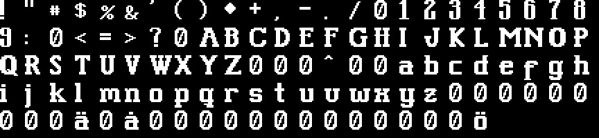
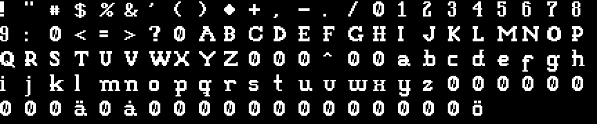

MDP ("MusicDiscPlayer") is not a demo with a timeline but
the S3M/MOD player and menu that Future Crew shipped with their music
disks (Purple Motion's Journey I and II, Skaven's
Chaotic Mind; v1.0 for the first two, v1.1 adds
+/- volume and S mono/stereo). It
is a Turbo Pascal 6/7 program on STMIK 0.9 (SB / SB Pro / GUS sound),
plus two assembly units for the graphics. So this document covers three
things: the menu, the playing screen
and what the port does about the sound. The
reverse-engineering notes are in docs/ANALYSIS.md,
the asm excerpts in WRITEUP-asm.md.
| part | status |
|---|---|
| Menu (layout, glyph placement, scroll, selection bar, fade) | ported routine by routine from unit 0x314; compared
with the original code running under Unicorn on a planar VGA model
(tools/oracle.py,
tools/tests/menu_vs_oracle.mjs) on every vsync: the
write-up page reports all 455 frames of a scripted run identical,
planes, CRTC and DAC. The v1.1 menu matches DOSBox-X captures (0
differing pixels, per the README). Only the v1.0 menu is checked against
the oracle. |
| Playing screen, static parts (header, labels, grid, bar frame) | match DOSBox-X captures (tools/tests/play_static.mjs, 0
differing pixels per the README) |
| Playing screen, moving markers | approximated: the maths of the original (quantiser, size, decay) is ported, but the input is rebuilt from pattern data (section 3) and the pitch mapping is shifted. Not compared with the original frame by frame. |
| Progress bar and positions | come from libopenmpt, not from STMIK |
| Sound | not original: libopenmpt (WebAssembly) instead of STMIK's mixer |
| Launcher, mouse, CRT overlay, upload of your own modules | additions, not in the original |
Screen.layout in
site/js/app.js).site/js/vga.js): four 64 KB planes, CRTC start address /
line compare / offset, a 16-entry 6-bit DAC, and a scan-out that walks
the planes. 59.94 Hz frames drive vsync(), which the ported
routines await where the original polled the retrace
bit.WRITEUP-asm.md sections 1-2. The playing screen's
erase variant (466d,
blit(..., erase=true)) clears glyph bits instead of setting
them, so text is drawn as "holes" in an all-ones background.site/js/menu.js)Data. MDP.MDI is a plain text file. A
line starting with # begins an entry, the first line after
it is the file name; a doubled ## introduces the closing
text. The header lines (@JOURNEY I@, by, ...)
are centred. @ inside a line toggles bit 0 of the colour,
so @Purple Motion@ flips to the next colour for a word.
Entry bodies: line 1 = the module name (small font), line 2 = a
right-aligned year, then body text; a line starting with $
is justified.
// menu.js: loadMdi - '#' ends the previous text and starts an entry, '##' starts the footer
for (let bx = 0x800; bx < di; bx++) {
if (b[bx] !== 0x23) continue;
b[bx] = 0; // make every entry a 0-terminated string
if (count >= 50 || (b[++bx] === 0x23)) { this.lastWords = bx + 1; bx++; continue; }
this.ent[count++] = bx;
}The file is copied to offset 0x800 of a 0x2800-byte buffer (at most 0x2000 bytes), up to 50 entries.
Glyph engine. Fonts are small tables: a header
(+0 height, +2 first char, +4
last char, +6 default advance) then 4 bytes per character
(bitmap offset, advance); a bitmap is one 16-bit word per row, bit 15 on
the left. There are two fonts, A (small, 0x28ac) and B (big, 0x369c),
both extracted into assets/menu_data.bin and addressed with
their original cs offsets. drawChar places a glyph at pixel
x with a shift of x & 7, 3 bytes per row; with
shadow on (menu only), a second pass draws the same glyph
into plane 3, 2 pixels right and 2 rows down:
// text.js
const v = (u16(d, g + 2 * r) << 8) >> cl; // glyph row shifted into 3 bytes
pl[di] |= v >> 16 & 255; pl[di+1] |= v >> 8 & 255; pl[di+2] |= v & 255;
...
if (this.shadow) { let c2 = cl + 2, d2 = di; if (c2 & 8) d2++;
this.blit(this.vga.planes[3], g, h, (d2 + 2 * this.stride) & 0xffff, c2 & 7, false); }Text layout is a per-line state machine with five modes (plain
463c, centred 45a0, right 45b3,
justified 45c3, and the @-toggle in
drawChar). A justified line measures its width, takes the
slack to 504 px (0x1f8) and gives each space
slack / spacesLeft extra pixels in turn (asm section 7), so
the right margin is flush without drift. Lines outside the visible band
(clipLo..clipHi) are measured but not drawn, which keeps
the page redraw cheap.
The page is a 512x1024 virtual screen. Menu text is
drawn into video memory at pitch 64 bytes (512 px) over 1024 rows; the
visible window is 480 lines of it, chosen by the CRTC start address.
Only the entries near the window are drawn: drawPage
redraws everything but only draws rows inside the clip band,
scrollBy extends the band by 512 rows on the side one is
scrolling towards. The selection is a bar of plane-2 bits
(fillRows(rect0, rect1, 0xff)) behind the current entry,
erased with 0 before the next scroll. Because the window
can run past the end of video memory, the line-compare register restarts
the display at address 0:
// menu.js setScroll (4d95)
this.vga.start = ((ax & 0x3ff) * 0x40) & 0xffff; // CRTC 0Ch/0Dh
await this.env.vsync();
let cx = 0x3ff - (ax & 0x3ff); if (cx >= 0x1e0) cx = 0x1e0;
this.vga.lc = cx; // CRTC 18h (+ bits in 07h, 09h)and scanout reproduces it:
a = L <= lc ? start + L*stride : (L - lc - 1)*stride.
Scrolling speed. scrollBy moves the
target entry to 200 rows below the top (tgt = rect0 - 0xc8)
and steps bp pixels per frame, with bp growing
by 1 before the half-way point and shrinking after it, clamped to 1..16:
a symmetric ease-in/out with no table.
Fades. The screen is drawn with the DAC at zero,
then fade(0, 4) raises a brightness al from 0
to 0x40 by 4 per frame, writing pal * al >> 6 to the
DAC; exit runs fade(0x3f, -4).
What the port changes. Mouse wheel, click-to-select
and click-to-play call the same scrollBy / key codes; the
keyboard handling is the original's (scancode words). These are
additions in the event loop only.
site/js/play.js)The screen (set up at f4e:0008, then the header/labels
from the Pascal side, 0:2246) has:
ESC for menu,
F10 for dos, ...), small and big font, drawn with the erase
variant of the glyph engine;bar(v), ported from 0:20ba) built from plane
writes, whose fill is one byte per 8 pixels plus a partial byte;numbers, 0:2545..2690:
a 32x49 pixel block at x=592 cleared then : n drawn at
x=580; 65 rows on v1.1 for the extra volume line);Grid. 39 vertical lines (mov cx, 0x27),
one per column boundary, drawn in plane 3 only with 1-pixel stems and
3-pixel ticks every octave-ish interval (the tick rows are taken from
the displacements of the unrolled stores, GRID_TICK). There
are 38 columns of markers.
Markers. Each marker is 16 pixels wide and 2 rows
high per size unit. Per module row change, scan goes
through the 16 channels and updates a column:
// play.js scan(): per channel
let col = c.inst & 0xff; col--; while (col >= NCOL) col -= NCOL; // column = (instrument-1) mod 38
...
const y = 0x186 - ((12 * cl + ch + PITCH_SHIFT) << 2); // 4 px per semitone, 12 per octave
const size = (c.vol >> 3) + 3;
if (this.mSize[col] > size) continue; // louder marker wins
this.mY[col] = y; this.mSize[col] = size;
this.mHold[col] = c.loop ? 10 : 0; // looped samples stay up 10 framesSo the column identifies the instrument, the height the
pitch, the height of the bar the volume. Every frame
markers erases each old marker (20 rows), clamps the new
y to [6, 0x186], draws the bar in the plane mask given by
the column (COLS = 1,2,3,4,5,6,7,6,5,4,3,2, i.e. a colour
cycle of period 12 across the columns) and then decays:
hold counts down, and at 0 the size drops by
one per frame until it disappears. The pitch is quantised by the
original's chain of compares (asm section 8, including a wrong constant
kept on purpose in THR).
What is original here: the quantiser, the size formula, the hold/decay rule, the 38-column modulus, the colour table. What is not:
es:[si+0x12] period, +0x1a volume,
+0x4c loop end, +0x37 instrument). The port
has no STMIK, so site/js/tracker.js re-derives that state
from the module's pattern data one row at a time: note -> period via
the semitone table and the sample's C2SPD (S3M:
16*8363*16*T[semi] / (c2spd * 2^oct); the factor 16 matches
the original's pitch scale, noted in docs/ANALYSIS.md),
sample volume, volume column, note cut. Slides, vibrato and most
effects are not followed, so markers do not wobble the way the
original's did, and the original's extra skip for a non-looping channel
(es:[si+0x32] > 0xfa) is not modelled (its meaning was
not worked out).while ax < 0x38a0: ax*=2, cl++), so very low notes pile
up on the bottom row. The port adds the opposite loop
(while ax >= 0x7140: ax/=2; cl--) and shifts everything
by PITCH_SHIFT = 36 semitones to centre typical music. The
README states this: "markers are shifted up 3 octaves".The original sound is STMIK's software mixer (or GUS hardware
mixing). The port does not reproduce it.
site/js/mdp.worklet.js runs libopenmpt in an AudioWorklet
in two modes:
Pause and seek (module position: set_position_seconds /
set_position_order_row) are handled in the worklet; the
screen reads back order/row/seconds and the marker tracker is advanced
from the pattern data for the new position. Because the original screen
is driven only by module state and not by a separate clock, the same
structure is kept here.
STMIK itself and the Pascal main program (apart from the two routines named above) were not disassembled in this repository, so nothing is claimed about the player's timing or the exact moment it samples channel state beyond what the ported code does.
MDP has no cover image, texture, sprite or mesh: everything on screen
is text, filled rectangles and plane writes. The only art is two bitmap
fonts and the palettes. All of it is verified from
site/assets/menu_data.bin (6840 bytes = the unit-0x314 data
from cs offset 0x28ac to 0x4364, byte-identical to
work/MDP10_unpacked.EXE at file offset 0x600 + 0x3140 +
0x28ac; the port addresses it by the original cs offsets).
| asset | where | format | size |
|---|---|---|---|
| font A (small) | cs 0x28ac | header +0 height (18), +2 first char (33),
+4 last char (148), +6 default advance (10);
then 4 bytes per char (bitmap offset from the font start, advance);
bitmap = one 16-bit word per row, bit 15 = left |
1 bit/pixel, glyphs up to 16 px wide, 116 entries |
| font B (big) | cs 0x369c | same layout; height 16, first 33, last 148, default advance 9 | 116 entries |
| menu palette | cs 0x4334 | 16 entries x 3 bytes, 6-bit VGA DAC values, scaled by the fade | 16 colours |
| playing-screen palette | unit 0xf4e, offset 0x48 (copied to PAL in
play.js) |
16 x 3, 6-bit DAC | 16 colours |
Both fonts are 1-bit and single-colour: a glyph takes its colour from
the plane it is OR-ed into (section 1), so "number of colours per glyph"
is 1 (plus the plane-3 shadow in the menu). Every code from 33 to 148
has an entry; in the previews, several entries are placeholder shapes (a
"0"-like box) for characters the discs do not use, and the accented
letters are present (e.g. a-umlaut, o-umlaut). I decoded them with a
20-line script reading exactly the layout above (the same as
TextEngine.drawChar); how the fonts were first found is in
docs/ANALYSIS.md (header layout, 'G' of the big font at
unpacked-file offset 0x66f8).


Figures: all 116 entries of each font, 2x enlarged, white on
black (figures/font_small.png,
figures/font_big.png). figures/palettes.png:
the 16 entries of the menu palette (top row) and playing-screen palette
(bottom row).
The module files (*.S3M, MDP.MDI) are the
discs' music and text, not art; the discs ship no pictures.